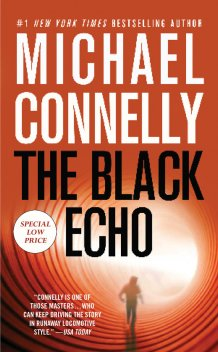
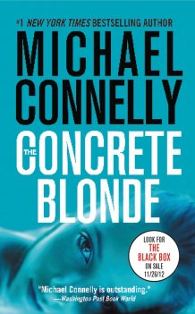
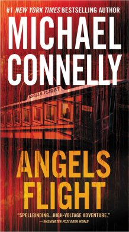
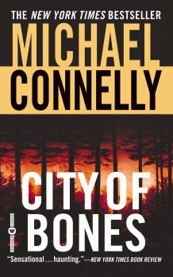
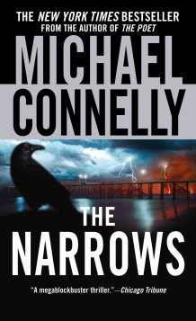
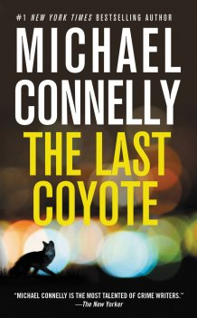
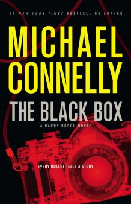

Black Echo
For maverick LAPD homicide detective Harry Bosch, the body in the drainpipe at Mulholland Dam is more than another anonymous statistic.

Concrete Blonde
They call him the Dollmaker, a serial killer who stalks Los Angeles and leaves a grisly calling card on the faces of his female victims. Angels Flight
An activist attorney is killed in a cute little L.A. trolley called Angels Flight, far from Harry Bosch's Hollywood turf.

City of Bones
On New Year's Day, a dog finds a bone in the Hollywood Hills--and unearths a murder committed more than twenty years earlier.

The Narrows
FBI agent Rachel Walling has never forgotten the serial killer who wove lines of poetry in his hideous crimes--and apparently he has not forgotten her.

The Last Coyote
Harry attacked his commanding officer and is suspended indefinitely, pending a psychiatric evaluation.9 Dragons
The murder of John Li hits Bosch hard, and he promises Li's family that he'll find the killer.

The Drop
Harry Bosch has been given three years before he must retire from the LAPD, and he wants cases more fiercely than ever.